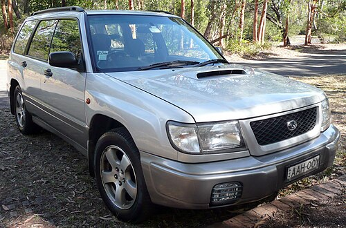
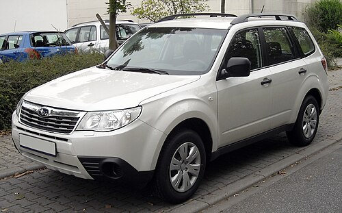
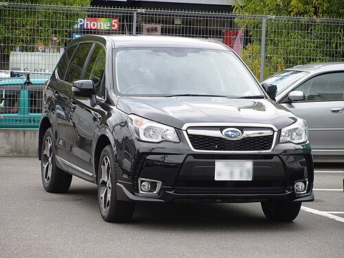
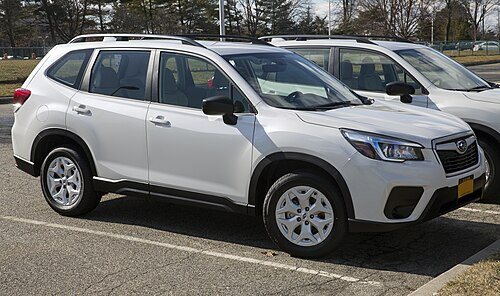
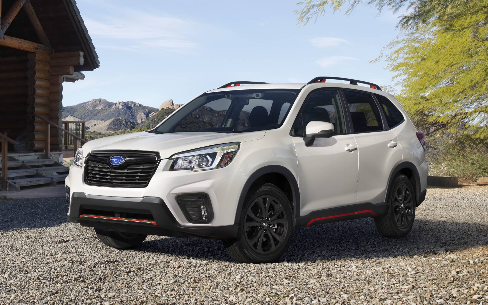
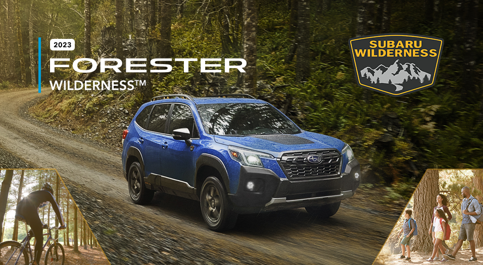
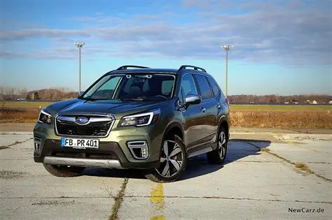
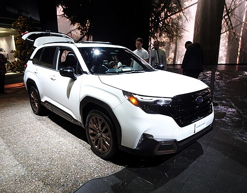
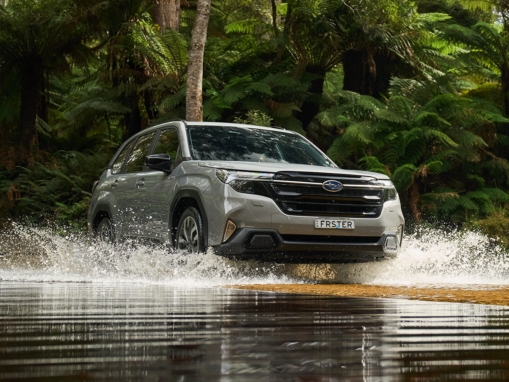

Back to main
Subaru Forester — японский компактный кроссовер бренда Subaru, выпускающийся с 1997 года. Построен на базе шасси Subaru Impreza.
Производится на заводе Gunma Yajima Factory в муниципалитете Ота, Япония.
На Детройтском автосалоне 1997 года Subaru представила машину с большим клиренсом и полным приводом, которая с виду была гораздо больше похожа на универсал, чем на внедорожник. В России, Австралии и США Subaru Forester пользуется большой популярностью как семейный внедорожник.
Содержание

Впервые Subaru Forester был представлен на Токийском автосалоне в ноябре 1995 в качестве концепта «Streega». В продаже автомобиль появился в 1997 году в Японии (2.0 литра - 137 л.с атмосферный и 240 л.с. турбированный), а в 1998 году и на американском рынке. Автомобиль был построен на платформе Impreza с оппозитными четырёхцилиндровыми двигателями 2.0 литра-122 л.с. атмо. и 170 л.с. турбо(для Европы), 2.5 литра от Outback мощностью 165 л.с. (123 кВт) при 5600 об/мин и 220 Н·м тяги при 4000 об/мин. В Японии Forester пришёл на замену модификации Subaru Impreza Gravel Express известной в Америке как Subaru Outback Sport. Размеры и стоимость автомобиля занимали нишу между Impreza и Legacy.
Также как и другие автомобили Subaru продаваемые в Соединённых Штатах и на других рынках с начала 1990 годов, Forester имел полный привод. Реклама Subaru шла под слоганом «SUV tough, Car Easy» и ориентировалась на рынок вседорожников, Forester в своей основе имел особенности свойственные вседорожникам, такие как большой, просторный багажник, высокую посадку водителя, увеличенный клиренс, хотя и не обладал рамной конструкцией. По сути Forester являлся одним из первых серийных кроссоверов, в современном понимании этого типа автомобиля.
Автоматическая трансмиссия в обычном режиме передаёт 90 % крутящего момента на передние колёса и 10 % на задние используя управляемое компьютером многодисковое сцепление. В случае потери сцепления с дорогой передними колёсами трансмиссия автоматически перераспределяет крутящий момент на задние колёса до предела в 55 % на 45 % до появления сцепления, все перераспределения происходят автоматически без уведомления водителя и пассажиров. При ускорении либо подъёме в гору увеличивается нагрузка на заднюю ось, уменьшая сцепление передних колёс с дорогой, для компенсации сцепления с дорогой трансмиссия увеличивает крутящий момент на задней оси. При торможении либо движении с горы увеличивается нагрузка на переднюю ось, для компенсации сцепления с дорогой и лучшей управляемости трансмиссия увеличивает крутящий момент на передней оси. При движении на первой передаче либо задним ходом трансмиссия распределяет крутящий момент 55 % на 45 %.
Характеристики и комплектации автомобилей, выпущенных для внутреннего японского рынка значительно отличаются от показателей Subaru Forester, произведённых для экспортных рынков.

На внутреннем японском рынке Subaru Forester второго поколения (кузов SG5) продавался с 2-литровыми 4-цилиндровыми оппозитными двигателями — атмосферными и наддувными. Также небольшими сериями производился Forester STI version (автомобиль в кузове SG9, разработанный тюнинг-ателье Subaru Technica International) с 2,5-литровым наддувным двигателем EJ255 с системой автоматического изменения фаз газораспределения I-Active valves. Единственная доступная для кроссовера Subaru Forester STI version коробка передач — 6-ступенчатая механическая. Центральный дифференциал является самоблокирующимся, на обеих осях присутствуют вентилируемые дисковые тормоза. Многие элементы салона изготовлены компанией Recaro.

Модель Forester 2.5x была сертифицирована в США по стандарту выбросов вредных веществ PZEV (номинальные 175 л.с., вместо 170 л.с.), табличка размещается в задней части транспортного средства на левой нижней части задней откидной двери. Все остальные модификации Forester были сертифицированы в США по стандарту LEV2. Двигатели 2.0 и 2.5 без турбонаддува работают на неэтилированном бензине с октановым числом 95 или более и 90 или более соответственно, а версии с турбонаддувом используют премиум-бензин с октановым числом 95 или более. Указанные октановые числа определены по исследовательскому методу. Что касается моделей с дизельным двигателем, то производитель рекомендует топливо EN590 или эквивалентное.
В Европе Forester доступен с новым оппозитным 2-литровым турбодизельным двигателем Subaru, мощностью в 147 л.с., который был представлен на Парижском автошоу в октябре 2008 года. Кроме Forester-а этим двигателем так же обзавелись европейские версии Subaru Impreza и Subaru Legacy.

Представлено 13 ноября 2012 года. В Японии продаётся с двухлитровыми оппозитными четырёхцилиндровыми двигателями мощностью 146 л. с. (198 Н·м) и 276 л. с. (350 Н·м). В США дополнительно предлагается 2,5-литровый двигатель мощностью 173 л. с., в Европе двухлитровый дизель мощностью 150 л. с. Доступны два варианта трансмиссии — шестиступенчатая механическая КПП и бесступенчатый вариатор Lineartronic.

Forester пятого поколения был представлен 28 марта 2018 года на Нью-Йоркском международном автосалоне . Как и современные модели Subaru, модель пятого поколения переместила Forester на глобальную платформу Subaru . Сообщается, что новая платформа обеспечит большую управляемость, маневренность, комфорт при езде и защиту от столкновений. Также заявлено, что он устойчив к шуму, вибрации и жесткости (NVH).
Forester пятого поколения включает в себя новейший язык дизайна Subaru , продаваемый как «Dynamic x Solid». Внутреннее пространство было увеличено в результате редизайна за счет удлинения колесной базы на 1,2–105,1 дюйма (с 30 до 2670 мм). Пространство для ног сзади увеличилось на 1,4–39,4 дюйма (с 35 до 1000 мм), а пространство для головы, бедер и плеч также увеличилось, что улучшило общее пространство салона. Более широкие проемы задних дверей и более крутая задняя стойка облегчают вход и выход, а также облегчают установку детского сиденья.
Переработанные передние сиденья заявлены чтобы чувствовать себя более комфортно в длительных поездках. Subaru также включила электрический стояночный тормоз , который освобождает место на центральной консоли. Багажное отделение в багажнике больше: 2155 литров (76,1 куб. футов) при сложенных задних сиденьях, разделенных в соотношении 60:40 – увеличение на 40 литров (1,4 куб. футов), а максимальная ширина проема задней двери составляет 5,3 дюйма (135 куб. футов). мм) шире на 51,2 дюйма (1300 мм).

Forester Sport с 1,8-литровым оппозитным 4-цилиндровым двигателем CB18 с непосредственным впрыском и турбонаддувом был представлен в октябре 2020 года на внутреннем рынке Японии. Двигатель развивает мощность 130 кВт (174 л.с., 177 л.с.) при 5200–5600 об/мин и 300 Нм (221 фунт-фут; 31 кгм) при 1600–3600 об/мин. Этот двигатель также присутствует в Subaru Levorg, предназначенном только для JDM . С появлением Sport FB20D e-BOXER стал стандартным двигателем для всей остальной линейки Forester в Японии. По состоянию на июль 2021 года нет сообщений о том, получат ли CB18 другие рынки.
Forester Sport можно узнать по черной решетке радиатора, а также окрашенным в серый цвет крышкам противотуманных фар, боковым зеркалам и порогам. Sport также оснащен набором темных 18-дюймовых колес, а задняя панель добавляет дополнительную отделку вокруг окна задней двери. Он также оснащен двойными выхлопными патрубками, которые являются частью обновленного и более спортивного нижнего фартука.
Обновленная модель была выпущена для Северной Америки в сентябре 2021 года в качестве модели 2022 года. У него была новая передняя часть, а также слегка измененный задний бампер, а трансмиссия осталась без изменений. Все модели Forester оснащены обновленной системой помощи водителю Subaru четвертого поколения. Также была представлена модель Wilderness, ориентированная на бездорожье.

Наряду с рестайлинговой моделью Subaru выпустила новую модель под названием Forester Wilderness для рынка Северной Америки. Он задуман как версия Forester, более ориентированная на бездорожье, и в линейке Forester занимает промежуточное положение между уровнями комплектации Limited и Touring. Визуально у Forester больше обшивки кузова, а внутри — акценты медного цвета. Он имеет подъем на 0,5 дюйма (13 мм), что обеспечивает общий дорожный просвет 9,2 дюйма (230 мм). Wilderness также оснащен вездеходными шинами, более высоким передаточным числом главной передачи (4,11 против 3,70) и более высоким передаточным числом главной передачи (4,11 против 3,70). более прочный багажник на крыше, чем предыдущие модели. Водоотталкивающие сиденья Subaru StarTex также входят в стандартную комплектацию.
Wilderness оснащен тем же 2,5-литровым безнаддувным четырехцилиндровым двигателем FB25D, который установлен на других моделях Forester, продающихся в Северной Америке. Wilderness использует улучшенную версию X-Mode с двумя функциями. X-Mode обновлен и перенастроен с настройками для снега, грязи, глубокого снега и грязи. Допускается дополнительная пробуксовка колес, что дает преимущество в тяжелых условиях движения.

Subaru представила гибридную трансмиссию e-Boxer для европейских моделей Forester и XV на Женевском автосалоне в марте 2019 года; e-Boxer интегрирует электродвигатель в вариатор Lineartronic для улучшения экономии топлива и увеличения мощности.
Трансмиссия e-Boxer оснащена модифицированным двигателем FB20 мощностью 110 кВт (148 л.с., 150 л.с.) при 5600–6000 об / мин и крутящим моментом 194 Нм (143 фунт-фут; 20 кгм) при 4000 об / мин. Как и XV Crosstrek Hybrid первого поколения, Forester e-Boxer оснащен одним электродвигателем максимальной мощностью 12,3 кВт (16 л.с., 17 л.с.). Аккумулятор тягового двигателя расположен над задней осью, что улучшает баланс веса передней и задней части автомобиля.

Forester шестого поколения был представлен на автосалоне в Лос-Анджелесе 16 ноября 2023 года. Как и предыдущее поколение, он построен на платформе Subaru Global Platform. 2,5-литровый FB25 был перенесен из предыдущего поколения, но мощность уменьшена до 180 л.с (130 кВт), что на 2 л.с. (1,5 кВт) меньше, чем у предыдущего поколения. Крутящий момент был увеличен с 239 Нм до 241 Нм, при этом максимальный крутящий момент приходится на более низкие обороты.

Генеральный директор Subaru Ацуши Осаки подтвердил, что Forester Hybrid поступит в производство в 2026 году.
Получил всероссийскую премию "Лучший автомобиль 2022 года в классе легкие внедорожники"